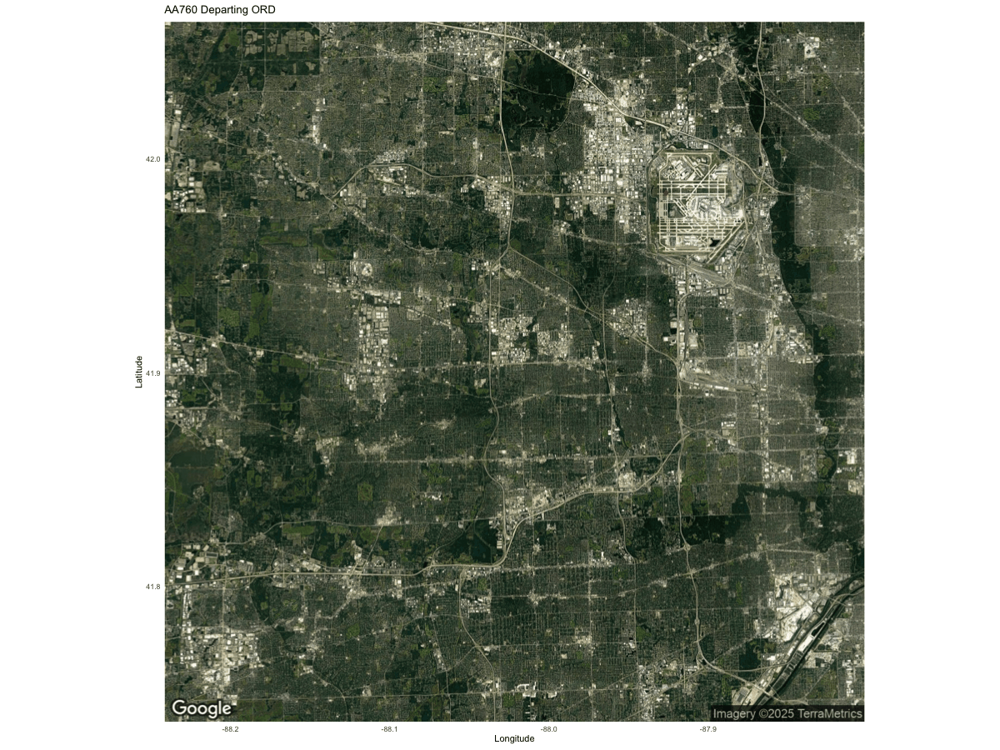
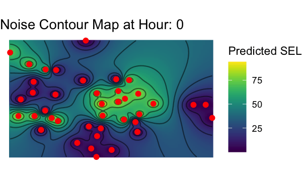

Results & Discussion
Research Question
Restating our research question:
Is the intensity and frequency of aircraft noise at Chicago O’Hare linked to fluctuations in flight operations, and does this, in turn, influence local housing prices?
1. Flight Operations at O’Hare
Our first step was to examine overall flight operations at O’Hare. Figures Departure_by_hour.png and Arrivals_by_hour.png depict the hourly distribution of departures and arrivals, respectively. The data we used is over a 24 hour period on October 27th, 2024. We observe pronounced peaks during the morning and late afternoon/evening hours, reflecting O’Hare’s role as a major international hub. These busy periods are often associated with elevated noise levels due to increased aircraft movements.
2. Noise Pattern by Hour
Next, we analyzed the noise events recorded by the 40 monitoring stations in the O’Hare vicinity. Figure below shows the number of noise events per hour of day, confirming that noise events typically coincide with O’Hare’s peak flight times. This temporal correlation shows the direct relationship between aircraft movements and elevated noise levels.
3. Monitoring Stations Interactive Map
To contextualize these noise events spatially, we created an interactive Leaflet map (see map_2.html) of all monitoring station locations:
- Each station is shown as a circle marker, styled with a radius, color, and fill opacity.
- Popups display each station’s ID and address, and labels identify the station number.
- Color is mapped to the total number of noise events per station, enabling quick assessments of which stations experience the most frequent noise events.
We find that the noise stations directly under the approach paths of the runways used most frequently tend to record the highest instances of noise events. These results again shows the relationship between flight corridors and noise impacts. By mapping event counts, we are able to further understand how flight operations translate to measurable noise exposure at each monitoring site.
4. Single Flight Example
Figure AA760_departure_satellite.gif animates the departure path of American Airlines Flight 760 from O’Hare on October 17th at around 5 AM. We will use this flight to highlight how the noise stations operate.

Upon ploting the departure path of AA760, we further integrated the flight track and monitoring stations into a single animation (see Combined_Noise_Flight.gif). In this GIF, we gradually reveal the AA760 departure path while highlighting each station in red whenever a noise event is detected. This combined visualization helps clarify how noise events align (in time and space) with aircraft operations. Note that the noise event data is corse, and is only recorded to every minute. This may explain why we observe delayed activation of some of the noise stations under the flight path.

5. Noise Contour
To deepen our spatial analysis, we interpolated the Sound Exposure Level (SEL) values across the region and plotted them as contours. The animation in noise_contour.gif illustrates how these contours evolve over a day. These contour lines highlight areas where SEL values transition sharply, while the color scale (from low SEL in blue/purple to high SEL in yellow/green) shows differing noise intensity. Monitoring stations are shown as red dots, helping us figure out which neighborhoods coincide with high-noise zones.

6. Comparing Noise and Housing Prices
As a bonus, we wanted to investigate the relationship between noise levels and local housing prices. Figure noise_contour_hour17.png shows a noise contour map for 5:00 PM (17:00), where contour lines highlight areas with significant noise-level gradients. Red points mark the monitoring stations, illustrating regions of particular concern. We can see that noise levels are lowest to the North and South of the airport, which suggests that these areas experience less noise exposure. Looking at the runway layout and published departure procedures for O’Hare, it becomes clear that these quieter zones benefit from the flight paths bypassing or minimally impacting them, as most of its runways are East-West facing.
Meanwhile, Figure Housing_Prices.png presents a heat map of housing values around O’Hare. Comparing these two visuals reveals that areas with lower noise levels closely align with higher housing prices (notably to the North and South of the airport). This suggests that persistent aircraft noise could negatively affect property values.
In conclusion, our analysis reveals a strong connection between flight activity and noise pollution in the O’Hare area. The interactive monitoring stations map, the hourly histograms of departures and arrivals, the flight track animations, and the evolving spatial noise contours all indicate that busy flight periods coincide with elevated noise levels along the aircraft corridors. Additionally, the housing price heat map shows that neighborhoods with lower noise levels tend to have higher property values, suggesting that persistent aircraft noise could adversely affect local real estate and socialeconomic levels. These findings highlight the complex relationship between aviation operations and community well-being, pointing to the potential need for improved noise abatement policies.